|
|
| sponges text index | photo index |
| Phylum Porifera |
| Golf
ball sponge Cinachyrella australiensis* Family Tetillidae updated Oct 2016 Where seen? This furry ball-shaped sponge is sometimes seen on coral rubble on some of our shores. Sometimes with shallow circular depressions, it then resembles a golf ball. It is one of the most common and abundant sponges on intertidal and shallow reefs. Elsewhere, they thrive in silty areas. Sometimes, similar sponges are found washed ashore. These are usually smooth without spines and usually smell bad. Are they dead or dying golf ball sponges? Features: 6-8cm in diameter, spherical densely covered with short, fine spines. These are needle-shaped spicules that stick out of the surface. Don't touch the sponge as the spicules may pierce your skin and remain embedded causing great discomfort. There may be circular pits or indentations on the surface that are bare of spines. These are specialised pore-bearing pits called porocalices. These regularly spaced pits do make them resemble golf balls! Sometimes, broken ones are also seen, showing the yellow internal radiating skeletons. Young ones lack the pits on the surface and often resemble furry balls. Colour usually yellow, although sediment accumulated on the spines may hide the colour. Looks similar to the Rambutan sponge which has fewer fine spines sometimes with bulbous tips and anchored to the surface with stringy tissues. Golf ball sponges lack these bulbous tips and stringy anchors. |
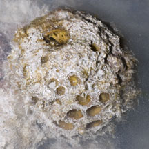 Pulau Hantu, Jan 12 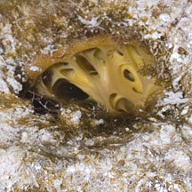 |
|
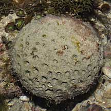 Regular circular indentations makes it resemble a golf ball. Pulau Hantu, Apr 09 |
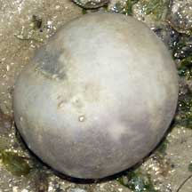 Possibly a dead golfball sponge? Chek Jawa, Jan 07 |
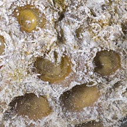 |
|
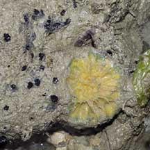 Pulau Semakau, Aug 07 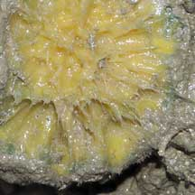 Broken ones reveal the yellow radiating internal skeleton. |
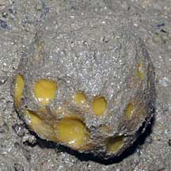 Changi, Sep 10 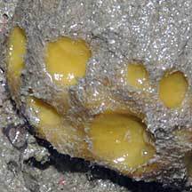 |
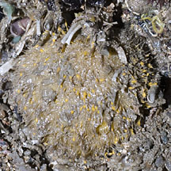 Pulau Ubin, Dec 12 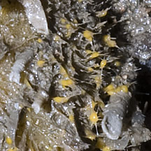 Tiny blobs at the filament tips: buds that fall off to become new sponges? |
*Sponge species are difficult to positively identify without close examination.
On this website, they are grouped by external features for convenience of display.
| Golf ball sponges on Singapore shores |
| Photos of Golf ball sponges for free download from wildsingapore flickr |
| Distribution in Singapore on this wildsingapore flickr map |
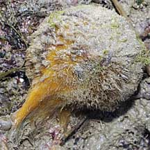 Terumbu Berkas, Jan 10 |
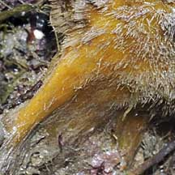 |
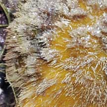 |
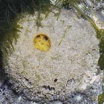 Pulau Biola, Dec 09 |
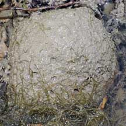 Terumbu Berkas, Jan 10 |
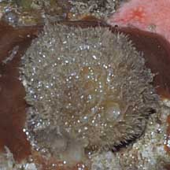 Terumbu Salu, Jan 10 |
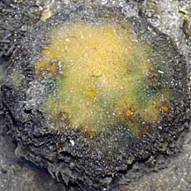 Terumbu Salu, Jan 10 |
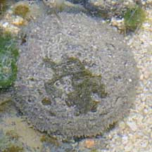 Pulau Salu, Jun 10 |
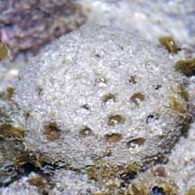 Pulau Berkas, May 10 |
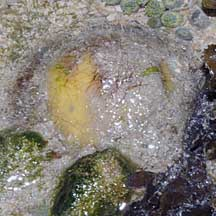 Pulau Salu, Jun 10 |
|
Links
References
|